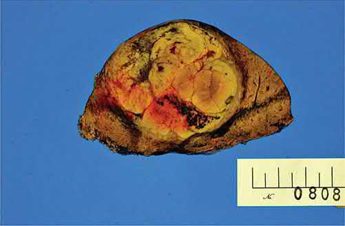
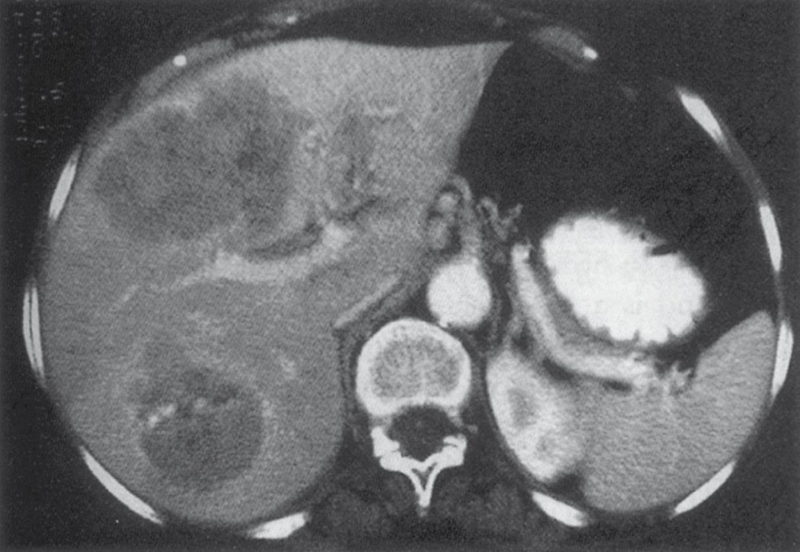
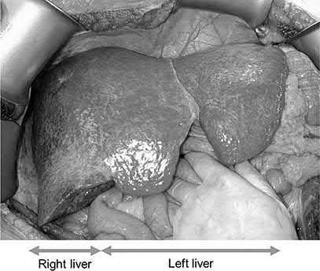
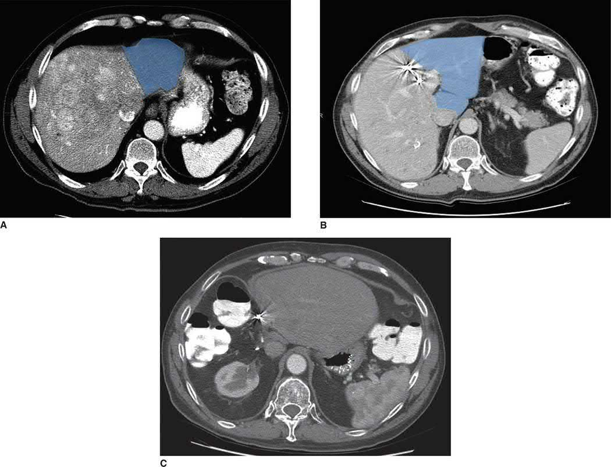

Hepatocellular Carcinoma
Summary
- Hepatocellular carcinoma (HCC) is the most common primary malignant tumour of the liver and the fifth most common cancer, and the second most frequent cause of cancer-related death, globally [1][2].
- Roughly 90% of cases arise in the setting of cirrhosis, most often from chronic hepatitis B or C infection [1][3].
- Incidence is greatest where exposure to chronic liver injury is heaviest, over 20 cases per 100,000 per year in sub-Saharan Africa and East Asia against 6 per 100,000 in the United States, where it is highest among Asian, African American and Hispanic individuals, and globally males have up to 5.7 times the incidence of females [4].
- Management depends on both tumour burden and underlying liver function, ranging from resection or transplantation for early disease to locoregional and systemic therapies for advanced disease [1].
There is no single NICE guideline on hepatocellular carcinoma. UK guidance is assembled from two places: NICE NG50 on cirrhosis, which contains the surveillance recommendation, and a set of technology appraisals that determine which systemic agents the NHS funds and for whom [5][6][7][8][9].
A single thread runs through all four appraisals: every recommended systemic agent is restricted to Child-Pugh grade A liver impairment. Three of the four additionally require an ECOG performance status of 0 or 1 [6][7][8][9].
Definition
Hepatocellular carcinoma is a primary malignant epithelial tumour arising from hepatocytes, typically developing on a background of chronic liver injury and cirrhosis [1][3]. It is histologically graded well, moderately, or poorly differentiated, and grossly classified into hanging, pushing and infiltrative growth patterns with differing resectability and prognosis [1].
Variants
Fibrolamellar carcinoma accounts for less than 5% of all HCC, occurs in younger patients, affects males and females equally, and is not associated with chronic liver inflammation such as hepatitis or cirrhosis; it is slow growing, presents with abdominal pain or an abdominal mass, is often resectable, and has a 5-year overall survival after resection of 76% [4]. It carries neurotensin as a marker and has the best prognosis of the HCC subtypes, while the diffuse nodular type has the worst [10]. Combined HCC and cholangiocarcinoma contains elements of both and accounts for less than 1% of primary liver tumours, arising from malignant transformation of hepatic progenitor cells with dual differentiation, producing a lesion capable of bile production, trabecular growth, glandular structures and intracellular mucin; its 5-year overall and disease-specific survival falls between that of HCC and cholangiocarcinoma [4].
Pathophysiology
- HCC arises from chronic hepatic inflammation, necrosis and compensatory hepatocyte regeneration, which over time promotes accumulation of DNA damage and malignant transformation, typically against a background of established cirrhosis [1][3].
- Cirrhotic livers with higher rates of DNA replication are associated with increased HCC development, although cirrhosis is not an absolute prerequisite [1].
- Growth patterns are classified as hanging (attached by a small vascular stalk, easily resected), pushing (well demarcated with a fibrous capsule, displacing rather than invading vessels, usually resectable), or infiltrative (invades vascular structures even when small, with a higher rate of positive resection margins) [1].
- Multifocal disease usually represents late-stage portal venous spread with both metastatic satellite lesions and possible independent primary tumours [1].
The dysplastic nodule sequence
HCC develops in a multistep progression from normal hepatocyte to malignancy. Dysplastic nodules are nodular lesions larger than 5 mm, divided into low-grade (no cytologic atypia, often with a peripheral fibrous scar) and high-grade (architectural and/or cytologic atypia, increased cell density, irregular trabecular pattern); these precede HCC [4]. Early HCCs are larger than dysplastic nodules and characterised by five parameters: cell density more than twice the surrounding tissue with an increased nuclear-to-cytoplasm ratio and irregular thin-trabecular pattern; intratumoral portal tracts; a pseudoglandular pattern; diffuse fatty changes; and unpaired arteries within the nodule [4]. Distinguishing a high-grade dysplastic nodule from early HCC is challenging, and the key distinguishing finding is stromal invasion in HCC [4].
Eggel's gross classification
- Eggel categorised HCC in 1901 into three gross types.
- The nodular type has well-circumscribed nodules without extranodal extension or multinodularity, and the lowest frequency of spread. Massive HCCs occupy the majority of the liver parenchyma, are often seen in non-cirrhotic livers, and have a higher propensity for lymph node and intrahepatic metastases than nodular tumours. Diffuse HCCs are multiple small lesions covering the liver and are almost always associated with haematogenous extrahepatic metastases [4].
- Invasion of the portal or hepatic vein, or of the bile duct, is an additional poor prognostic feature [4].
Hypervascularity
A unique feature of HCC is that it derives the majority of its blood supply from the hepatic artery rather than the portal vein, which is what makes it identifiable on multiphase cross-sectional imaging and what transarterial therapies exploit [4]. Primary liver tumours are generally hypervascular, metastatic liver tumours generally hypovascular [10].

Clinical features
- Classic presentation is a man aged 50–60 years with right-upper-quadrant pain, weight loss and a palpable mass; in HBV-endemic regions, presentation occurs at a younger age, likely reflecting childhood infection [1].
- Many patients are now identified incidentally through surveillance imaging in known cirrhosis or viral hepatitis, or present with acute hepatic decompensation in previously unrecognised cirrhosis [1][3].
- Unlike other malignancies HCC often presents incidentally, either during follow-up for known liver disease or once tumour progression causes a mass effect: direct bile duct obstruction gives obstructive jaundice, compression of the liver capsule gives right-upper-quadrant pain, and bleeding from the tumour gives anaemia if minor or haemorrhagic shock if major, with anorexia, weight loss and malaise as the constitutional accompaniment [4].
- Where HCC is found incidentally in a cirrhotic patient, the general examination findings are those of portal hypertension, ascites, jaundice, varices and splenomegaly [4].
- Rare presentations include tumour rupture with haemoperitoneum and hypovolaemic shock, Budd-Chiari syndrome from hepatic vein occlusion, obstructive jaundice, haemobilia, and paraneoplastic syndromes (hypercalcaemia, hypoglycaemia, erythrocytosis) in under 1% of cases [1].
- Maingot's adds fever from tumour necrosis, and lists hypercholesterolaemia, watery diarrhoea and cutaneous manifestations among the paraneoplastic syndromes, noting that these are seen in several gastrointestinal malignancies and are not specific to HCC [4].
- The commonest site of metastasis is the lung [10].
Etiology
Hepatitis B is the leading global cause of HCC, accounting for the highest incidence rates in sub-Saharan Africa and Southeast Asia; hepatitis C predominates in Japan, Europe and the United States [1]. Overall, 75–80% of HCC is attributable to HBV (50–55%) or HCV (25–30%) infection, which act synergistically when co-existing [1][4].
Why hepatitis B differs from hepatitis C
- Among patients with hepatitis B, 20% of HCC cases develop before cirrhosis has developed, whereas in hepatitis C, HCC almost always arises on a background of significant cirrhosis and fibrosis.
- The proposed explanation is that hepatitis B virus directly modulates oncogenes, while hepatitis C-induced HCC relates to the degree of inflammation [4].
- With hepatitis B vaccination and better detection of both viruses, approximately 60% of patients with HCC in current practice are not infected with a hepatitis virus at all [4].
- Cirrhosis of any cause, chronic alcohol abuse (acting as a co-carcinogen rather than a direct carcinogen), aflatoxin exposure (from Aspergillus-contaminated grains/peanuts), non-alcoholic steatohepatitis (NASH)/obesity, and inherited metabolic disorders (hereditary haemochromatosis, alpha-1-antitrypsin deficiency, Wilson disease) are all recognised risk factors [1][3].
- The ABSITE Review adds primary sclerosing cholangitis, hepatic adenoma, steroids and pesticides to the list [10].
- Independent risk factors once cirrhosis is established include male sex, older age, and diabetes mellitus [3].
- The annual conversion rate to HCC among patients with cirrhosis is 2–6% [2].
Quantified exposures
| Exposure | Reported effect |
|---|---|
| Alcohol, 60 g per day for more than 25 years | Almost 6-fold increase in HCC risk (OR 5.7, 95% CI 2.4–13.7) |
| Hepatitis B alone | Approximately 7-fold increase in risk |
| Aflatoxin alone | Approximately 4-fold increase in risk |
| Hepatitis B with concomitant aflatoxin exposure | 59.4 times the risk of the normal population |
| BMI 35–40 kg/m² in women | Almost twice the liver cancer mortality rate |
| BMI 35–40 kg/m² in men | Almost 5 times the liver cancer mortality rate |
| Statin use | Adjusted OR 0.63 (95% CI 0.52–0.76), protective |
- Table reformats the reported risk data [4].
- Alcohol metabolism proceeds by oxidative processes causing lipogenesis and fatty liver that can progress to cirrhosis, and generates reactive oxygen species in hepatocytes that cause further damage; the damage and the associated HCC risk are dose-dependent [4].
- Aflatoxin, produced by Aspergillus flavus and Aspergillus parasiticus on corn, soybeans and peanuts stored warm and damp, is thought to act by creating mutations in the TP53 gene, and the regions where exposure is highest coincide with regions of high hepatitis B prevalence, hence the potentiation [4].
- Statins are thought to inactivate pro-growth pathways and activate apoptotic pathways through HMG-CoA reductase-dependent and -independent mechanisms, the protective effect being seen in both Asian and Western populations [4].
- Prevention rests on reducing exposure (hepatitis B vaccination has reduced HCC rates in high-risk countries such as Taiwan) and on close surveillance and treatment of hepatitis B or C to prevent cirrhosis [4].
Diagnosis
- Unlike most solid cancers, HCC can be diagnosed on imaging alone without biopsy when typical features are present in a high-risk (cirrhotic) patient: rapid arterial-phase enhancement followed by washout in the delayed/portal-venous phase, sometimes with an enhancing capsule, on contrast-enhanced CT or MRI [1][3].
- Additional common findings are delayed enhancement of the fibrous pseudocapsule, septations, and an internal mosaic pattern [4][10].
- For lesions 1–2 cm, sequential CT and MRI have a sensitivity of 53–62% but specificity approaching 100%; for lesions >2 cm, a single study typically suffices [1].
CT or MRI, and what to do when imaging is equivocal
- A meta-analysis of 15 studies found MRI better than CT for both sensitivity (91% vs 81%) and specificity (95% vs 93%), especially for smaller lesions, though the choice is largely institutional and depends on the reader's comfort [4].
- Maingot's gives an explicit algorithm: a lesion larger than 1 cm with the classic radiographic appearance needs no further workup or biopsy; where the findings are not definitive, repeat with the other modality; where they remain ambiguous after both, a needle biopsy may be performed unless the patient is a candidate for liver transplant, in whom biopsy should await evaluation by the transplant team to avoid peritoneal seeding, even though seeding risk is low in experienced hands; and lesions smaller than 1 cm are followed by hepatic ultrasound every 3 months, with further investigation if there are concerning changes [4].
- Percutaneous biopsy is generally avoided in operative candidates given a small (~1%) risk of tumour seeding along the needle tract, and is reserved for cases of diagnostic uncertainty or advanced/unresectable disease [1][3].
Alpha-fetoprotein
- Alpha-fetoprotein (AFP) has low sensitivity and specificity and is no longer central to diagnosis given the excellent performance of modern cross-sectional imaging, but AFP >400 ng/mL with concordant imaging is considered diagnostic, and serial AFP is useful for monitoring treatment response and recurrence [1][3].
- AFP is a glycoprotein produced by the fetal liver and yolk sac and is elevated in gonadal tumours, gastric cancer, pregnancy, acute or chronic hepatitis, and cirrhosis; a value above 20 µg/L is typically considered abnormal, but sensitivity and specificity at that cutoff vary considerably with the population examined, so the state of the underlying liver must be taken into account when interpreting it [4].
- Critically, up to 40% of patients with small HCCs have a normal AFP, which is why imaging remains the mainstay of surveillance; the combination of characteristic imaging with an elevated AFP does have a high positive predictive value [4].
- AFP level correlates with tumour size [10].
Screening and surveillance
Screening should be reserved for patients at high risk and not performed in the general population; the American Association for the Study of Liver Diseases recommends liver sonography every 6 to 12 months for individuals with cirrhosis [4]. Japan, where prevalence is far higher, uses a more intensive schedule: for cirrhosis related to hepatitis B or C, sonography plus serum AFP and plasma des-gamma-carboxy prothrombin every 3 to 4 months with CT or MRI every 6 to 12 months; for chronic hepatitis B or C, or cirrhosis of other cause, the same blood and ultrasound testing every 6 months with cross-sectional imaging where appropriate [4].
Preoperative staging requires assessment both of tumour extent (triphasic CT, chest CT to exclude pulmonary metastases) and of liver function/portal hypertension, since resection candidacy is governed as much by hepatic reserve as by tumour anatomy [1]. Staging laparoscopy spares roughly one in five patients a non-therapeutic laparotomy, with higher yield (up to 30%) in patients with clinically apparent cirrhosis, radiologic vascular invasion, or bilobar tumours [1].

NICE sets a single surveillance schedule and states it as an offer, not a consideration: offer ultrasound, with or without measurement of serum alpha-fetoprotein, every 6 months as surveillance for hepatocellular carcinoma for people with cirrhosis who do not have hepatitis B virus infection [5]. People with cirrhosis and hepatitis B are covered instead by the surveillance recommendations in NICE's guideline on chronic hepatitis B [5].
Two features of that recommendation are worth noticing against the textbook practice. NICE fixes the interval at 6 months, where the American guidance quoted in the textbooks allows 6 to 12 months. And NICE makes AFP optional ("with or without") rather than a routine adjunct, which is consistent with the textbook observation that up to 40% of small HCCs have a normal AFP.
There is one explicit exclusion: do not offer surveillance for HCC for people who are receiving end of life care [5].
Surveillance sits alongside two other monitoring recommendations for compensated cirrhosis that shape when a patient reaches specialist care: calculate the MELD score every 6 months, and consider a MELD score of 12 or more as an indicator that the person is at high risk of complications of cirrhosis, referring people who have or are at high risk of complications to a specialist hepatology centre [5].
Scoring and Severity
Child-Pugh classification (based on bilirubin, INR, albumin, ascites and encephalopathy, each scored 1–3; Class A = 5–6, B = 7–9, C = 10–15) is the most widely used tool for assessing hepatic reserve before resection: Child-Pugh A patients without portal hypertension are generally suitable for resection, Child-Pugh C patients are not candidates for resection, and Child-Pugh B is borderline and individualised [11]. The MELD score (INR, creatinine, bilirubin, ± sodium) is used particularly for transplant allocation and has largely supplemented Child-Pugh for surgical risk stratification, with preoperative MELD <16 associated with lower postoperative mortality [11]; a MELD of 15 or above is needed to derive a survival benefit from liver transplantation [10].
Maingot's separates the staging systems into pathologic systems derived from surgical outcomes, the AJCC/UICC TNM system, the Liver Cancer Study Group of Japan system, the Japanese Integrated Staging score and the Chinese University Prognostic Index, and clinical systems, comprising Okuda, CLIP and BCLC; clinical systems are more useful for choosing treatment, particularly where surgery is not feasible [4].
TNM and the primacy of vascular invasion
- TNM staging is not routinely used for HCC because it does not incorporate liver function and requires pathology data usually unavailable preoperatively [1].
- Where it is used, the most important prognostic factor is vascular invasion: tumours without it are T1, those with it are at least T2, and those with major vascular invasion (a major branch of the portal or hepatic vein) are T3 [4].
- Five-year overall survival after liver resection for stage I, II and III disease is 55%, 37% and 16% respectively [4].
- An international multicentre study found that neither microvascular invasion nor tumour differentiation affects surgical outcome in HCCs smaller than 2 cm, suggesting this subset should be classified separately as a better-prognosis group; underlying liver disease is assessed by a two-tier fibrosis score which, although not incorporated into the stage, carries prognostic value since patients with associated liver disease do worse [4].
The clinical systems and their limitations
- The Okuda staging system incorporates liver function and tumour-related factors (tumour extent >50% of the liver, ascites, albumin <3 g/dL, bilirubin >3 mg/dL), reliably separating patients with a very poor prognosis from those with potential for long-term survival [1].
- Its weakness is that it was derived from a cohort with primarily advanced disease using limited tumour-specific factors, so it has little validity in early HCC and lumps vascular invasion and multifocal disease into a single group [4].
- The Cancer of the Liver Italian Program (CLIP) score, the most rigorously validated system, sums points for Child-Pugh class, tumour morphology (uninodular vs multinodular vs massive), AFP level, and portal vein thrombosis, with 0–3 points associated with potential for long-term survival and 4–6 points indicating advanced disease [1].
- CLIP stratifies prognosis better than Okuda but still groups a wide range of heterogeneous outcomes together and does not accurately account for vascular invasion [4].
- The Barcelona Clinic Liver Cancer (BCLC) system is a widely used staging tool that integrates tumour burden, liver function and performance status [11], designed specifically to incorporate more prognostic factors and better stratify patients with early disease [4].
Treatment and Management
Treatment selection depends on tumour stage, liver function, and patient fitness, discussed in a multidisciplinary setting [1]. Complete resection (partial or total hepatectomy with transplantation) offers the best chance of long-term survival, but only 10–20% of patients are candidates [1].
Locoregional therapy
- Locoregional options for non-surgical candidates include percutaneous ethanol or acetic acid injection, thermal ablation (radiofrequency, microwave, cryotherapy), and transarterial therapies (bland embolisation, chemoembolisation/TACE, radioembolisation/SIRT with yttrium-90) [1][3].
- Radiofrequency ablation causes thermal damage by applying an alternating current, and the range of that damage defines its selection criteria: optimal candidates have tumours smaller than 2 cm if the intent is curative, and smaller than 4 cm if the intent is palliative; randomised trials comparing RFA with percutaneous ethanol injection found better overall survival with RFA [4].
- The ABSITE Review simplifies palliative selection by lesion size: under 5 cm, ablation by radiofrequency, microwave or cryotherapy; over 5 cm, transarterial chemoembolisation; and radiotherapy if neither is suitable [10].
- TACE exploits the hepatic-arterial blood supply of HCC by injecting chemotherapeutic agents with a procoagulant material into the arterial branch supplying the tumour, and has been proven more effective than supportive care; drug-eluting polyvinyl alcohol microspheres or beads can be used instead, embolising the tumour and delivering chemotherapy locally while limiting systemic escape [4].
- It is often used for large HCCs unsuitable for resection or ablation; the agents commonly used are doxorubicin, cisplatin, epirubicin and doxorubicin-eluting beads, randomised trials have found no difference in outcome between agents, and the benefit of drug-eluting beads remains controversial [4].
- Locoregional therapies are also used as a bridge to transplant, particularly where a patient on the waiting list has tumours approaching the size criteria [1][4].
Systemic therapy
- Systemic therapy for advanced disease centres on sorafenib, a multikinase inhibitor and the first FDA-approved systemic agent for HCC, which improved median overall survival by 2.8 months over placebo in the SHARP trial (10.7 vs 7.9 months) [1][2].
- Sorafenib acts on vascular endothelial growth factor receptor 2, platelet-derived growth factor receptor, FLT3, Raf-1, Ret and c-Kit, and two randomised phase III trials (SHARP and the Asia-Pacific trial) demonstrated statistically significant overall survival improvements of 2.8 and 2.3 months respectively [4].
- HCC is notoriously resistant to cytotoxic chemotherapy because it overexpresses drug-resistance genes, and the underlying liver dysfunction means cytotoxics are poorly tolerated; modest effects are nonetheless seen with combinations such as cisplatin, interferon α-2b, doxorubicin and fluorouracil (PIAF) in patients with minimal underlying liver disease, where the objective response rate rises with the number of cycles and survival is significantly better in those who become amenable to surgery afterwards [4].
- Immune checkpoint inhibitors targeting PD-1, PD-L1 and CTLA-4 (e.g. atezolizumab plus bevacizumab, durvalumab ± tremelimumab) are now used in the first-line advanced/unresectable setting, though patients with NAFLD/NASH-related HCC appear to respond less well to checkpoint inhibition [1].
The NHS-funded systemic pathway for advanced or unresectable HCC is defined by four technology appraisals, and it is best learned as a table because the eligibility criteria are nearly identical across them.
| Appraisal | Agent | Setting | Restriction |
|---|---|---|---|
| TA666 (2020) | Atezolizumab plus bevacizumab | Advanced or unresectable HCC, no previous systemic treatment | Child-Pugh grade A and ECOG performance status 0 or 1, with the commercial arrangement |
| TA551 (2018) | Lenvatinib | Untreated, advanced, unresectable HCC | Child-Pugh grade A and ECOG performance status 0 or 1, with the commercial arrangement |
| TA474 (2017) | Sorafenib | Advanced HCC | Child-Pugh grade A only, within the agreed commercial access arrangement |
| TA555 (2019) | Regorafenib | Advanced unresectable HCC in adults who have had sorafenib | Child-Pugh grade A and ECOG performance status 0 or 1, with the commercial arrangement |
Table reproduces the recommendations of the four appraisals [6][7][8][9].
- The committee reasoning explains the sequence.
- Standard care for advanced or unresectable HCC with no previous systemic treatment was sorafenib or lenvatinib; trial evidence showed that people with Child-Pugh grade A impairment and ECOG 0 or 1 given atezolizumab plus bevacizumab live longer and have longer before progression than those given sorafenib, and an indirect comparison suggested it is also more effective than lenvatinib, though that comparison is uncertain because there is no head-to-head evidence [6].
- Lenvatinib was recommended because it slows progression and shrinks more tumours than sorafenib with about the same overall survival, and has a different side-effect profile that suits some people who cannot tolerate sorafenib [7].
Regorafenib fills the second-line gap: before it, people whose disease progressed on sorafenib or who could not tolerate it had only best supportive care. Its trial evidence comes only from people who had been treated with sorafenib with ECOG 0 or 1 and Child-Pugh grade A, and does not include people who could not tolerate sorafenib or who have worse liver disease or performance status, so the benefit cannot be assumed to extend to them; it met NICE's end-of-life criteria [8].
The practical consequence is that Child-Pugh grade matters twice over. It determines resectability in the textbook framework, and separately it determines whether any NHS-funded systemic agent is available at all. A patient with Child-Pugh B or C disease is outside every one of these four appraisals.
Surgeries
- Resection (partial hepatectomy) is indicated for patients with adequate liver function (Child-Pugh A, no portal hypertension) and a solitary tumour without major vascular invasion; Child-Pugh B or C cirrhosis and significant portal hypertension are contraindications to resection [1].
- Postresection 5-year survival ranges from 11% to 75% depending on stage and degree of cirrhosis [1].
- Negative prognostic factors after resection include tumour size, cirrhosis, infiltrative growth pattern, vascular invasion, multifocality, nodal metastases, margin <1 cm, and absence of a tumour capsule [1].
- A 1 cm margin is the target, 5-year survival with resection is around 30%, and recurrence is most likely to occur in the liver itself [10].
- Maingot's puts the recurrence rate after liver resection as high as 70% [4].
- For selected patients with BCLC stage B or C disease, resection can still be proposed, and recent series indicate that surgery performed by experienced teams is associated with improved long-term survival [4].
Future liver remnant and portal vein embolisation
Adequate future liver remnant (FLR) volume is essential and can be increased preoperatively with portal vein embolisation when FLR is under 30–40% of total liver volume in a cirrhotic patient [1][3]. The thresholds scale with the state of the liver.
| Liver status | Minimum future liver remnant |
|---|---|
| No liver disease | At least 20% |
| After chemotherapy | At least 30% |
| Cirrhosis or fibrosis | At least 40% |
- Table reproduces the stated thresholds [4].
- The ABSITE Review gives 25% with no cirrhosis and 40% for Child's A disease [10].
- Portal vein embolisation increases the remnant, thereby increasing the number of patients eligible for resection, reducing liver-failure complications and increasing the safety of resection; like indocyanine green clearance and technetium-99m-galactosyl human serum albumin scintigraphy, it also acts as a functional test of liver severity, a degree of hypertrophy of less than 5% at 3 weeks after embolisation predicts increased liver-related complications, hepatic dysfunction, prolonged stay and 90-day mortality [4].


Transplantation
- Liver transplantation addresses both the tumour and the underlying cirrhosis and is the theoretically ideal treatment, limited by donor organ scarcity and the need for chronic immunosuppression [1].
- Patient selection follows the Milan criteria, one tumour <5 cm, or up to three tumours each <3 cm, with no gross vascular or extrahepatic invasion, which improved 5-year survival substantially compared with earlier, less selective transplant criteria; long-term survival with stringent selection ranges from 50–85% [1][2].
- Patients meeting the Milan criteria achieved 4-year survival rates of 75% in the original series [4].
- Patients with advanced cirrhosis (Child-Pugh B/C) and early-stage HCC should generally be directed to transplantation, whereas Child-Pugh A patients have similar outcomes with either resection or transplantation and are usually resected given organ scarcity [1][4][10].
- While awaiting transplantation, locoregional therapy (ablation, transarterial therapy) controls tumour progression to prevent drop-out from the waiting list [1].
The UCSF criteria propose expanding selection to a single tumour no larger than 6.5 cm, or a maximum of three tumours none larger than 4.5 cm with the sum of maximum diameters no greater than 8 cm. This remains controversial: 5-year overall survival in transplanted patients meeting these criteria has ranged from 38% to 93%, proponents arguing that patients with larger HCCs can be cured while critics cite higher rates of vascular invasion and recurrence, and given the shortage of livers the narrower UNOS/Milan criteria remain the standard in the United States [4].
Complications
- Postoperative liver failure is the principal risk of resection, related to the degree of underlying cirrhosis, portal hypertension, extent of resection, and regenerative capacity of the remnant [1].
- Locoregional ablative and embolisation therapies carry risks including post-embolisation syndrome, hepatic abscess, and (with poor patient selection) treatment-induced liver failure; radiofrequency ablation is limited near major vessels by the "heat sink" effect and has higher local recurrence for tumours >3 cm [1].
- HCC itself can be complicated by spontaneous rupture with intraperitoneal haemorrhage, portal or hepatic vein tumour thrombosis, and biliary obstruction from tumour invasion [1][3].
- Most patients with large HCCs are borderline resectable at diagnosis, because of either a small future liver remnant or major vascular invasion [4].
Prognosis
- Overall survival is heavily dependent on tumour stage at presentation and the degree of underlying liver dysfunction, since patients with HCC effectively have two diseases, the tumour and the cirrhosis [1][4].
- Following resection, 1-year survival ranges from 58–100%, 5-year survival from 11–75%, and 10-year survival from 19–26%, depending on tumour stage and cirrhosis severity [1].
- Stage-specific 5-year survival after resection is 55% for stage I, 37% for stage II and 16% for stage III [4].
- Fibrolamellar HCC, a distinct variant occurring in younger patients without cirrhosis and not producing AFP, generally has a better prognosis than conventional HCC, with 50–75% long-term survival after complete resection, though recurrence occurs in at least 80% of patients and lymph node metastases predict a worse outcome [1]; Maingot's reports 76% 5-year overall survival after resection of fibrolamellar carcinoma [4].
References
- Sabiston Textbook of Surgery, 22nd ed., Ch. 89
- Schwartz's Principles of Surgery: ABSITE and Board Review, Ch. 31
- Oxford Handbook of Clinical Surgery, 5th ed., Ch. 9, for FLR thresholds of 20–40% depending on underlying liver health
- Maingot's Abdominal Operations, 13th ed., Ch. 58, Malignant Liver Neoplasms
- NICE Guideline NG50: Cirrhosis in over 16s: assessment and management (2016, updated 2023), 1.2.1, 1.2.2, 1.2.3; 1.3; 1.3.1; 1.3.2 www.nice.org.uk
- NICE Technology Appraisal TA666: Atezolizumab with bevacizumab for treating advanced or unresectable hepatocellular carcinoma (2020), 1.1; Why the committee made these recommendations www.nice.org.uk
- NICE Technology Appraisal TA551: Lenvatinib for untreated advanced hepatocellular carcinoma (2018), 1.1; Why the committee made these recommendations www.nice.org.uk
- NICE Technology Appraisal TA555: Regorafenib for previously treated advanced hepatocellular carcinoma (2019), 1.1; Why the committee made these recommendations www.nice.org.uk
- NICE Technology Appraisal TA474: Sorafenib for treating advanced hepatocellular carcinoma (2017), 1.1 www.nice.org.uk
- The ABSITE Review, 2022, Ch. Liver
- Sabiston Textbook of Surgery, 22nd ed., Ch. 51, cross-referenced as the BCLC staging system